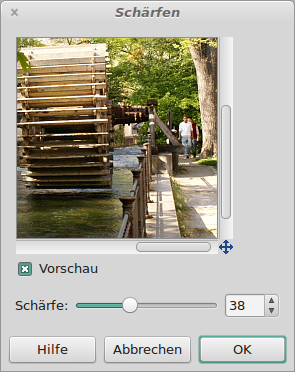
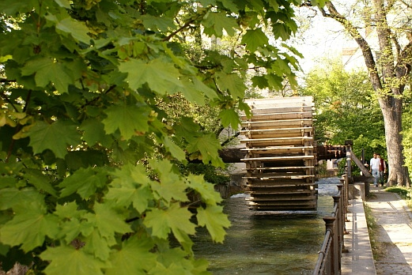

Die Bildschärfe erhöhen
GIMP besitzt ein gutes Werkzeug, um Bilder nachzuschärfen. Jedes Digitalbild sollte nachgeschärft werden. Viele Digitalkameras haben diese Funktion bereits eingebaut und schärfen die Bilder nach. Sie sollten dafür GIMP verwenden, da es das bessere Ergebnis liefert und Sie den Grad der Schärfe selbst festlegen können. Lesen Sie im Handbuch Ihres Fotoapparates nach, wie die Schärfefunktion abgeschaltet werden kann. Hier das Ausgangsbild: |
| Abb. 1: Das Bild, das nachgeschärft werden soll |
Im Menü Filter → Verbessern → Schärfen kann das Werkzeug gestartet werden. Laut GIMP-Handbuch ist die Funktion "Unscharf Maskieren" exakter steuerbar und liefert oftmals die besseren Ergebnisse. Bei dutzenden von Bildern, die ich geschärft haben, konnte ich jedoch in keinem einzigen Fall feststellen, dass dies ein besseres Ergebnis gebracht hätte. Durch die Bank war die Funktion "Schärfen" wesentlich schneller in der Handhabung und lieferte die besseren oder zumindest gleichgute Ergebnisse.
|  |
| Abb. 2: Das Schärfen-Werkzeug |
Das Ergebnis lässt sich über das Vorschaubild kontrollieren. Man sollte vermeiden, die Schärfe allzu hoch zu setzten. Hier das Ergebnis:
|  |
| Abb. 3: Das geschärfte Bild |
© 2009-2017 Michael Roppel